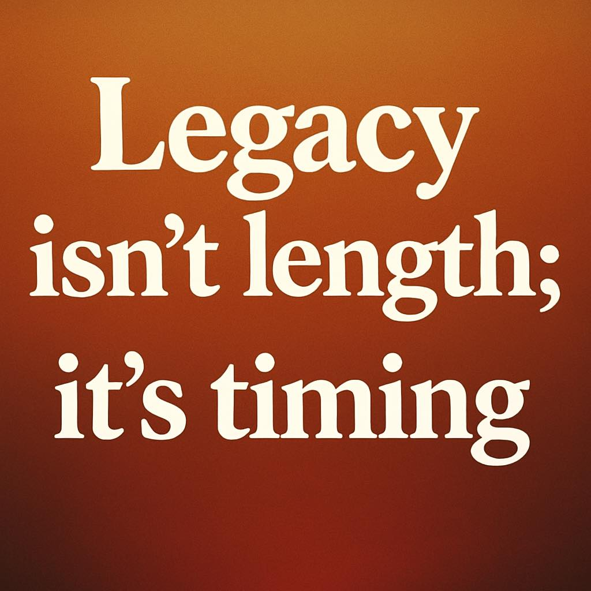

เกียรติอาจไม่ได้อยู่ที่การอยู่จนสุดทาง แต่อยู่ที่การรู้จักก้าวลงในเวลาที่ถูกต้อง
{kind=link}

บทความนี้เริ่มจากความรู้สึกดีใจที่ได้เห็นคนคิดเหมือนกัน และได้รับกำลังใจจากผู้ใหญ่บางท่าน แต่สิ่งที่ผู้เขียนพาไปต่อกลับไม่ใช่เรื่องกำลังใจเฉพาะหน้า หากเป็นคำถามลึกกว่านั้นว่า การอยู่นานไปทำให้ legacy ดีขึ้นจริงหรือไม่
น้ำหนักของโพสต์อยู่ที่การยอมรับว่า ความโลภ ความโกรธ ความหลง หรือความยึดมั่นถือมั่น อาจทำให้คนมองไม่เห็นจังหวะของชีวิต และบางครั้งการรู้จักหยุดอาจงดงามกว่าการพยายามอยู่ต่อ นี่เป็นข้อใคร่ครวญที่เชื่อมทั้งเรื่องชีวิตส่วนตัว ภาวะผู้นำ และวัฒนธรรมขององค์กร
จุดเด่นของโพสต์นี้คือการไม่โจมตีใครโดยตรง แต่ใช้ภาษานุ่มและลึกพอจะทำให้ผู้อ่านหันกลับมาคิดกับตัวเองว่า บางครั้งสิ่งที่เรายื้อไว้ไม่ใช่หน้าที่หรือภารกิจ หากเป็นเพียงความผูกพันกับบทบาทเดิมและภาพจำของตัวเองเท่านั้น
การรู้จักหยุดอาจเป็นรูปแบบหนึ่งของปัญญา ไม่ใช่ความพ่ายแพ้
ประโยคสำคัญของโพสต์นี้คือการบอกว่า การ “รู้จักหยุด” อาจงดงามกว่าการ “พยายามอยู่ต่อ” เพราะในวัฒนธรรมที่มักยกย่องการอดทนหรือการยืนระยะ การวางมือตามเวลาเหมาะสมมักถูกตีความผิดว่าเป็นการยอมแพ้ ทั้งที่จริงอาจเป็นการมองภาพรวมได้ชัดกว่าต่างหาก
มุมนี้ทำให้โพสต์มีความหมายเชิงภาวะผู้นำสูงมาก เพราะมันเสนอว่าเกียรติไม่ได้ผูกกับการไปให้สุดแบบเสมอไป แต่อยู่ที่การอ่านจังหวะของตนเองและขององค์กรให้ออก
legacy ไม่ใช่สิ่งที่ยืดได้ไม่สิ้นสุด และอนุสาวรีย์ก็มีอายุของมันเอง
ผู้เขียนเตือนอย่างคมว่าการอยู่นานขึ้นไม่ได้ทำให้ legacy ดีขึ้นเสมอไป และอนุสาวรีย์เองก็เป็นเพียงความทรงจำของคนบางรุ่นเท่านั้น นี่เป็นการลดทอนมายาคติเรื่องความยิ่งใหญ่ถาวรของตำแหน่งหรือชื่อเสียงลงอย่างสงบ แต่ชัดเจน
สิ่งนี้ชวนให้มองว่า legacy ที่ดีอาจไม่ใช่การสะสมเวลาหรืออำนาจ แต่คือการจากไปในจังหวะที่ทำให้สิ่งที่ทิ้งไว้ยังคงมีความหมายอยู่
เกียรติของการก้าวลงอยู่ที่ความถูกต้องของจังหวะ มากกว่าระยะเวลาที่เคยยืนอยู่
ข้อสรุปของโพสต์นี้อยู่ที่ประโยคว่า เกียรติไม่ได้อยู่ที่การอยู่จนสุดทาง แต่อยู่ที่การก้าวลงในเวลาที่ถูกต้อง นี่เป็นทั้งบทสะท้อนชีวิตและคำชี้นำเชิงสถาบัน ว่าองค์กรใดก็ตามที่ไม่เข้าใจเรื่อง succession และ timing ย่อมเสี่ยงจะทำให้ความทรงจำดี ๆ ค่อย ๆ ถูกกัดกร่อนโดยการยื้อตำแหน่งเกินจำเป็น
ดังนั้น โพสต์นี้แม้จะสั้น แต่จริง ๆ คือบทเรียนเรื่องการวางมืออย่างมีศักดิ์ศรี และการไม่ปล่อยให้ความยึดมั่นส่วนตนบดบังสิ่งที่เหมาะสมต่อภาพรวม